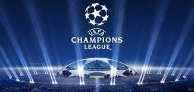

La Champions es una competencia de equipos de europa como el barcelona el real madrid y todos
esos equipos en el cual va avanzando por fase de grupos octavos cuartos smifinales y final
Motivación
Escogí este tema porque el futbol es un deporte que me genera mucha pasión tanto jugarlo como
verlo,
ver los partidos de mi equipo ver las competiciones y todo eso es algo increíble que nunca
desearía que nadie se lo perdiera
Champions
Top 10 jugadores de la Champions League
25/11/2021
Memphis Depay
N'golo Kante
Kevin De Bruyne
Karim Benzema
Robert Lewandowski
Neymar
Erling Haaland
Kylian Mbappé
Cristiano Ronaldo
Lionel Messi
Este es un top 10 de los jugadores que actualmente son los mejores de esta competición.
Aquí hay unos links que los llevarán a las páginas confiables y oficiales para ver las
noticias más resientes del Futbol
Fernando palomo ESPN

Video Champions
16/12/2021
Aquí les dejo un video de jugadas de la Champions
Investigación
21/01/2022
Los equipos más fuertes en la champions
El equipo alemán el Bayern Múnich está teniendo una Champions increíblemente buena ya que
en la fase de grupos quedó como primero1 y algo que no se ve mucho es
que no perdió
ninguno de los encuentros a pesar que tenía a el Benfica y al Futbol Club Barcelona,
logró ganar todos los partidos y no solo eso sino que también su peor encuentro fue
contra el Dinamo de Kiev que quedaron 2-1 pero sin contar ese partido, gano por 3 goles
mínimo o más, goleo a todos los equipos que se le cruzaron sin piedad y con todo lo que
tenían.
El Bayern Múnich después de haber pasado la fase de grupos con 18 puntos quiere nuevos
retos y lamentablemente debido a un error se repitió el sorteo y al Bayern Múnich Le
toco un equipo que no está a la altura FC Salzburgo de Austria, El FC Salzburgo debe
estar preparado para recibir una paliza increíblemente alta tanto en la ida como en la
vuelta ya que el Bayern Múnich siempre va con todo para ganar y el Salzburgo no es un
equipo con un equipo excepcional de hecho este equipo podría ser llegado a catalogar
como un equipo chico.
El Paris Saint German es otro de los grandes candidatos para ganar ya que con los
fichajes que hizo en el verano y los jugadores que ya tenía con anterioridad se hizo una
plantilla muy buena que hace que todos los equipos del mundo y los aficionados estén
terriblemente aterrorizados de ese equipo que tiene a el mejor jugador de la historia
Lionel Andrés Messi, uno de las mayores promesas Mbappe, uno de los mejores centrales de
todos los tiempo Sergio Ramos, el crack regateando de Neymar, y la mayor promesa en la
portería Donnarumma además de que ya tienen a Keylor Navas.
El Manchester City otro candidato para llevarse este año la competición anelada por
todos La UEFA Champions League, El Manchester City con su actual entrenador ( uno de los
mejores que ha existido) Pep Guardiola, que la competición pasada los llevó a la gran
final contra el Chelsea que perdieron, pero, este año vienen con todo quedando primeros
en su grupo con 12 puntos y ganándole un partido al PSG con ese increíble plantillon que
tienen, el City de Guardiola no se queda atrás teniendo a unos jugadores excepcionales
como el mejor central del mundo junto con marquinhos Rubén Días.
Aquí hay una estadistica de la opotunidad que tienen de ganr la competencia en base a su
desempeño
Messi y Cristianoa lo largo de la hiostoria.
Messi es el mejor jugador de la historia y no lo dice una persona lo dice las
estadísticas y premios que ha logrado conseguir tanto individuales como con su equipo o
selección, aunque haya mucho gente que se aponga Messi es el mejor en todo, Messi es un
jugador al cual no puedes predecir y hace de todo meter goles, hacer asistencias, crea
oportunidades, da pases increíbles, regatea a equipos enteros y siempre aparece en cada
minuto de partido, cuando Messi tiene el balón nadie sabe que es lo que va a hacer nunca
hace siempre la misma jugada por eso es tan impredecible.
A lo largo de la historia Messi estuvo en un único equipo hasta que se fue al PSG hace
poco, estuvo casi toda su vida en el Futbol club Barcelona y desde que llegó todos
vieron que era un jugador excepcional, el Barca antes de que llegará Messi sólo tenía
una Champions y después de que llegó gano 4 más ahora tiene 5, él es la mayor leyenda de
la historia del club porque le dio de todo al Barca Ligas ,Champions, Súper copas, etc,
además Messi en argentina el año pasado el 10 de julio del 2021 ganó la Copa américa que
era algo quería demasiado porque no ha ganado mucho con su selección y al fin lo
consiguió.
Cristiano Ronaldo es el mejor goleador de la historia a que ha sabido adaptarse a lo que
el equipo necesita y va a pasar a la historia gracias a que es una máquina de hacer
goles ya que es una de los máximos goleadores de toda la historia con 801 goles
actualmente, 450 fueron con el real Madrid el equipo donde brillo muchísimo y uno de los
mejores equipos que se han visto que ha ganado 13 Champions en todo su historia,
Cristiano es conocido también como Mr. Champions ya que ha ganado 5 Champions una con el
Manchester United y 4 con el Real Madrid.
Messi y Cristiano son sin lugar a dudas los dos mejores jugadores y no cnocen limites ya
que siguen ganando y rompiendo records en cada día y en la Champions no se quedan atrás
ya que Cristiano con 5 y Messi con 4 han ganado de todo y han roto cada record, en goles
asistencias regates y muchas cosas más, pero, si nos fijamos sobre todo en los goles y
en las asistencias nos daremos cuenta que ellos encabezan la lista como goleadores,
Cristiano Ronaldo fue el máximo anotador de la Champions en más ediciones con siete,
seguido por las seis de Lionel Messi.2
El Fc Bacerlona y su gran historia
El Barcelona es un equipo muy grande y es conocido por tener al mejor equipo de la
historia con Messi, Xavi, Iniesta, Puyol, Dani Alves, Jordi alba, etc., ese equipo gano
infinidad de cosas y nadie podía superarlo, tenía un juego increíble con el famoso Tiki
Taka o como dice Koeman tiki taki, era una estrategia de pases de primer toque rápidos y
muy inteligentes para que así el equipo contrario no tenga tiempo de alcanzar a
presionar lo suficiente como para quitar el balón y así ellos siempre tienen el balón y
pueden hacer jugadas mejor organizadas y sin ser predecibles.
El mediocampo del FC Barcelona está llena de jóvenes promesas, ya que en este equipo
están Gavi el más joven con 17 años, Nico con 20 años, Pedri con 19 años, Frenkie de
Jong con 24 años, Riqui Puig con 22 años y un veterano que es un jugador que es una
leyenda en el club por todos los años que ha estado y él ha estado en muchas de las
ocasiones en las que el equipo ha quedado campeón este es el jugador español de 33 años
y actualmente es el capitán del equipo es Sergio Busquets el medio centro defensivo de
Barca.
El barca en la actualidad tiene una delantera increíble con jugadores jóvenes y algunos
veteranos, Ansu fati jugador español de 19 años que es un jugador increíble, Memphis
Depay con 27 años, Luuk de Jong con 31 años Martin Braithwaite con 30 años, Ousmane
Dembélé aunque este jugador ya está a punto de irse ya que al no dar la confianza al
nuevo proyecto de Xavi y el jugador lo que hace es pedir demasiado dinero que el club no
puede pagar y a este jugador no le importa a pesar de que en 4 años ha estado la mitad
del tiempo lesionado .
El barca es uno de los equipos con más Champions en toda la historia del futbol, en esta
competición europea el Barca está en el cuarto lugar con 5 Champions por debajo del
Bayern Múnich y El Liverpool que tienen 6, el A.C Milan que tiene 7 y el equipo con más
victorias en esta competición es el equipo de España que actualmente está en el primer
lugar en su la Liga española con una diferencia de 5 puntos con el segundo lugar y de 17
puntos con el Barcelona es el Real Madrid que tiene 13 victorias y tres de ellas
consecutivas, pero, para el barca el primer título se hizo esperar: llegó en 1992,
cuando el campeonato aún se denominaba Copa de Europa.3
 Champions
Champions 
 Top 10 jugadores de la Champions League
Top 10 jugadores de la Champions League

 Referencias de futbol
Referencias de futbol


 Barca y sus fichajes
Barca y sus fichajes
 Rendimiento FC Barcelona actualmente
Rendimiento FC Barcelona actualmente